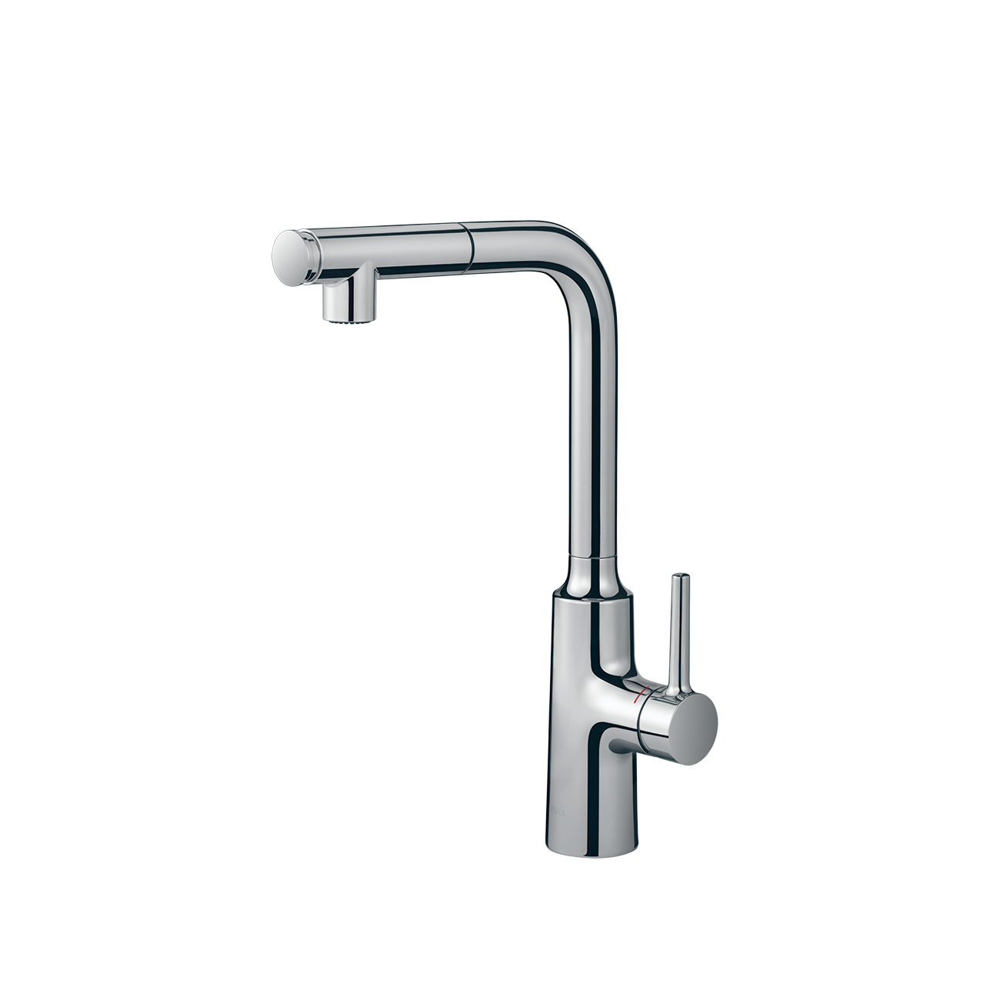
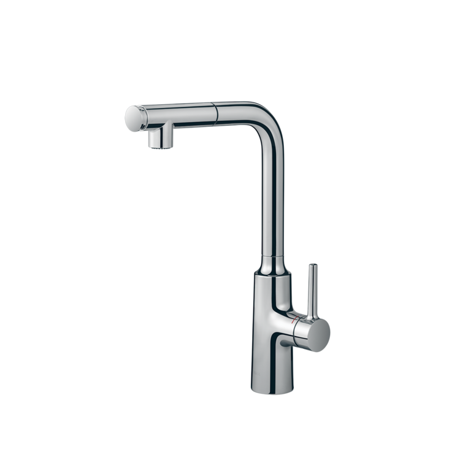
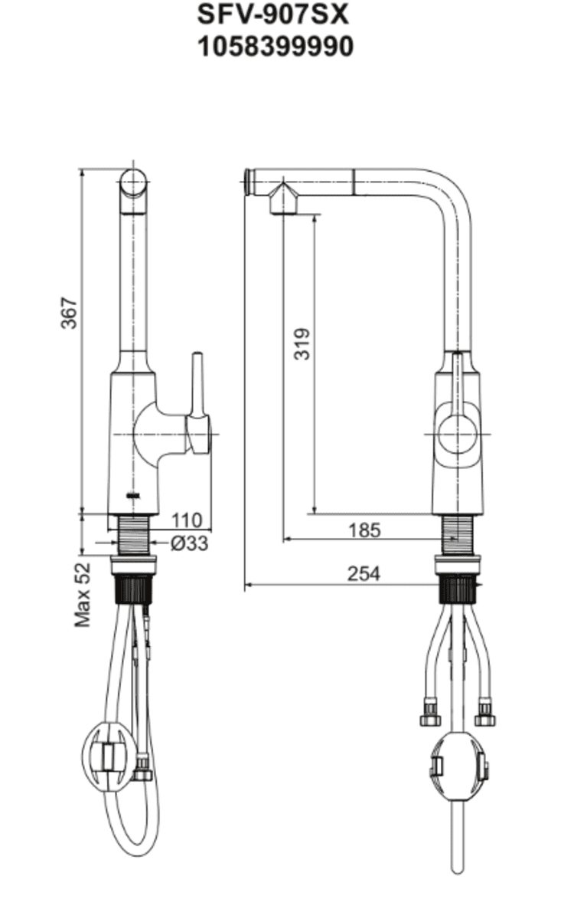

Vòi bếp SFV-907SX là giải pháp hoàn hảo cho gian bếp hiện đại, kết hợp giữa ngôn ngữ thiết kế hình khối chữ L mạnh mẽ và các tính năng thông minh, giúp tối ưu hóa công việc nội trợ hằng ngày.Ưu điểm của vòi chậu rửa bếp SFV-907SXThiết kế chữ L sang trọng, tối ưu hóa diện tíchVòi bếp SFV-907SX được thiết kế theo dạng chữ L với các đường nét dứt khoát, mang lại vẻ đẹp tinh tế và chuyên nghiệp cho không gian bếp.Thiết kế thân vòi cao và vòng cung rộng giúp gia tăng không gian sử dụng, thuận tiện khi rửa các loại nồi, chảo có kích thước lớn.Bề mặt sản phẩm được phủ lớp mạ Crom/Niken sáng bóng, không chỉ tạo vẻ sang trọng mà còn giúp chống bám bẩn và dễ dàng vệ sinh.Đầu vòi kéo rút linh hoạtĐầu vòi có khả năng kéo ra ngoài linh hoạt, cho phép người dùng đưa dòng nước đến chính xác những vị trí xa hoặc ngóc ngách mà các loại vòi cố định thông thường khó chạm tới.Khả năng điều hướng dòng nước kết hợp với thân vòi xoay giúp việc làm sạch toàn bộ bề mặt bồn rửa chén trở nên đơn giản và nhanh chóng hơn.Vòi bếp SFV-907SX tích hợp hai chế độ phun nước tại đầu vòi, đáp ứng đa dạng nhu cầu từ rửa rau củ nhẹ nhàng đến cọ rửa bát đĩa mạnh mẽ.Vận hành bền bỉ, tiết kiệm năng lượng với các tính năng nổi bậtTính năng Cold Start: Tay cầm điều chỉnh nhiệt độ tích hợp chức năng "Khởi động lạnh", giúp ngăn chặn việc kích hoạt bình nóng lạnh không cần thiết khi mở vòi ở vị trí trung tâm, từ đó giảm lãng phí năng lượng.Lõi van sứ siêu bền: Van điều khiển bằng sứ giúp vòi vận hành trơn tru, mượt mà và đảm bảo không xảy ra tình trạng rò rỉ nước sau thời gian dài sử dụng.Hệ thống lắp đặt Quick Fix: Hệ thống bộ gá lắp nhanh giúp việc kết nối vòi với chậu rửa bát trở nên dễ dàng và tiết kiệm thời gian lắp đặt.Nhìn chung, vòi rửa bát INAX SFV-907SX chính là lựa chọn hoàn hảo cho những chủ nhân yêu thích sự tiện nghi và muốn tìm kiếm một sản phẩm hội tụ đầy đủ tính năng hiện đại nhất cho gian bếp của mình.Video giới thiệu về vòi bếp INAXBản vẽ Vòi bếp SFV-907SXTài liệu Hướng dẫn lắp đặt vòi bếp SFV-907SXThông số kỹ thuậtMã sản phẩmSFV-900SXLoại vòiVòi rửa chén nóng lạnh dây rútThương hiệuINAXKiểu dángVòi cổ ngỗng thân cao sang trọng, tối ưu không gian thao tác tại chậu rửaChất liệuThân vòi bằng Đồng thau mạ Crom/Niken cao cấp, kết cấu bền vững, chống ăn mòn và giữ bề mặt luôn sáng bóng thời thượngChế độ nước2 chế độ Nóng và Lạnh tiện lợi, tích hợp công nghệ thông minh **Cold Start** (Khởi động nước lạnh ở vị trí trung tâm) giúp tiết kiệm điện năng, tránh lãng phí nước nóng không cần thiếtThiết kế đầu vòi- Tích hợp 2 chế độ phun linh hoạt (phun mưa diện rộng và phun dòng áp lực) - Dây rút kéo dài linh hoạt: Dễ dàng kéo đầu vòi ra xa để vệ sinh xung quanh thành chậu - Xoay 360°: Tiện lợi khi sử dụng cho các dòng chậu rửa bát đôiCông nghệ nổi bật- Quick Fix: Công nghệ lắp đặt nhanh chóng, dễ dàng và cố định vững chắc vào chậu rửa - Van lõi sứ cao cấp: Kiểm soát dòng nước mượt mà, ngăn ngừa rò rỉ và có độ bền bỉ vượt thời gianMàu sắcCrom sáng bóng, dễ lau chùi và hạn chế bám bẩnKhác- Hotline tư vấn và bảo hành chính hãng: 18006633
Vòi bếp SFV-907SX
Vòi bếp thương hiệu INAX.
Đã cập nhật danh sách yêu thích.
DANH MỤC: Vòi bếp
MÃ SẢN PHẨM: SFV-907SX
DEPTH: mm
HEIGHT: mm
WIDTH: mm
Vòi bếp SFV-907SX là giải pháp hoàn hảo cho gian bếp hiện đại, kết hợp giữa ngôn ngữ thiết kế hình khối chữ L mạnh mẽ và các tính năng thông minh, giúp tối ưu hóa công việc nội trợ hằng ngày.Ưu điểm của vòi chậu rửa bếp SFV-907SXThiết kế chữ L sang trọng, tối ưu hóa diện tíchVòi bếp SFV-907SX được thiết kế theo dạng chữ L với các đường nét dứt khoát, mang lại vẻ đẹp tinh tế và chuyên nghiệp cho không gian bếp.Thiết kế thân vòi cao và vòng cung rộng giúp gia tăng không gian sử dụng, thuận tiện khi rửa các loại nồi, chảo có kích thước lớn.Bề mặt sản phẩm được phủ lớp mạ Crom/Niken sáng bóng, không chỉ tạo vẻ sang trọng mà còn giúp chống bám bẩn và dễ dàng vệ sinh.Đầu vòi kéo rút linh hoạtĐầu vòi có khả năng kéo ra ngoài linh hoạt, cho phép người dùng đưa dòng nước đến chính xác những vị trí xa hoặc ngóc ngách mà các loại vòi cố định thông thường khó chạm tới.Khả năng điều hướng dòng nước kết hợp với thân vòi xoay giúp việc làm sạch toàn bộ bề mặt bồn rửa chén trở nên đơn giản và nhanh chóng hơn.Vòi bếp SFV-907SX tích hợp hai chế độ phun nước tại đầu vòi, đáp ứng đa dạng nhu cầu từ rửa rau củ nhẹ nhàng đến cọ rửa bát đĩa mạnh mẽ.Vận hành bền bỉ, tiết kiệm năng lượng với các tính năng nổi bậtTính năng Cold Start: Tay cầm điều chỉnh nhiệt độ tích hợp chức năng "Khởi động lạnh", giúp ngăn chặn việc kích hoạt bình nóng lạnh không cần thiết khi mở vòi ở vị trí trung tâm, từ đó giảm lãng phí năng lượng.Lõi van sứ siêu bền: Van điều khiển bằng sứ giúp vòi vận hành trơn tru, mượt mà và đảm bảo không xảy ra tình trạng rò rỉ nước sau thời gian dài sử dụng.Hệ thống lắp đặt Quick Fix: Hệ thống bộ gá lắp nhanh giúp việc kết nối vòi với chậu rửa bát trở nên dễ dàng và tiết kiệm thời gian lắp đặt.Nhìn chung, vòi rửa bát INAX SFV-907SX chính là lựa chọn hoàn hảo cho những chủ nhân yêu thích sự tiện nghi và muốn tìm kiếm một sản phẩm hội tụ đầy đủ tính năng hiện đại nhất cho gian bếp của mình.Video giới thiệu về vòi bếp INAXBản vẽ Vòi bếp SFV-907SXTài liệu Hướng dẫn lắp đặt vòi bếp SFV-907SXThông số kỹ thuậtMã sản phẩmSFV-900SXLoại vòiVòi rửa chén nóng lạnh dây rútThương hiệuINAXKiểu dángVòi cổ ngỗng thân cao sang trọng, tối ưu không gian thao tác tại chậu rửaChất liệuThân vòi bằng Đồng thau mạ Crom/Niken cao cấp, kết cấu bền vững, chống ăn mòn và giữ bề mặt luôn sáng bóng thời thượngChế độ nước2 chế độ Nóng và Lạnh tiện lợi, tích hợp công nghệ thông minh **Cold Start** (Khởi động nước lạnh ở vị trí trung tâm) giúp tiết kiệm điện năng, tránh lãng phí nước nóng không cần thiếtThiết kế đầu vòi- Tích hợp 2 chế độ phun linh hoạt (phun mưa diện rộng và phun dòng áp lực) - Dây rút kéo dài linh hoạt: Dễ dàng kéo đầu vòi ra xa để vệ sinh xung quanh thành chậu - Xoay 360°: Tiện lợi khi sử dụng cho các dòng chậu rửa bát đôiCông nghệ nổi bật- Quick Fix: Công nghệ lắp đặt nhanh chóng, dễ dàng và cố định vững chắc vào chậu rửa - Van lõi sứ cao cấp: Kiểm soát dòng nước mượt mà, ngăn ngừa rò rỉ và có độ bền bỉ vượt thời gianMàu sắcCrom sáng bóng, dễ lau chùi và hạn chế bám bẩnKhác- Hotline tư vấn và bảo hành chính hãng: 18006633
DANH MỤC: Vòi bếp
MÃ SẢN PHẨM: SFV-907SX
DEPTH: mm
HEIGHT: mm
WIDTH: mm